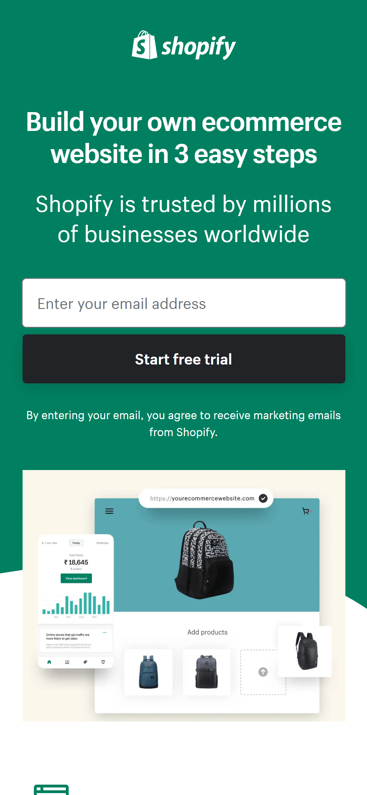
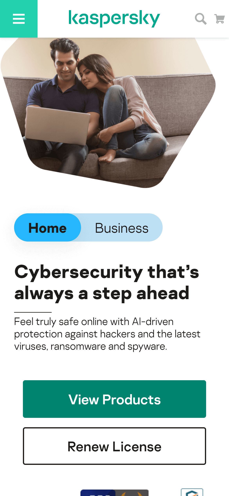
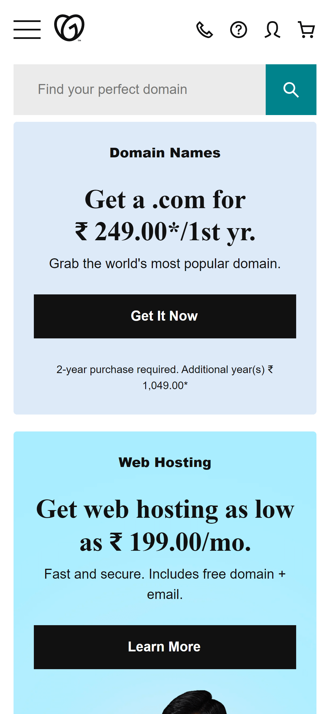

Design Principles Document
Arnold Sujan Katru
Visual Hierarchy
Shopify
www.shopify.in Shopify has caught my eye as I was looking for something for my personal project and I was able to notice the hierarchy between the lines of text and it was easy to focus on the main content which describes which is oversimplified into just one sentence and then followed by a little smaller sentence talking about the trust which people had on their site about their services and signup for trail and then we can notice the third sentence of text about the agreement for marketing emails from Shopify. The hierarchy here went from big to small in these three sentences.
White Space and Clean Design
Kaspersky
www.kaspersky.co.in Kaspersky is another site where I was led by accident in the mobile browser as a popup then I realized the use of white space and clean design they had in their website with very good readability and very focused on what they provide as a service and an action button to view their products right after a short description about the safety they provide online. the padding used in the action buttons is centered and the overall website has the content aligned to the center. The center-aligned website gives the site a very clean look and better use of white space.
PARC: Contrast
Godaddy
www.in.godaddy.com GoDaddy is a very popular site to buy domains or other internet hosting services they provide, and their mobile site was very simple, and the contrasts caught my attention and they did a really good job with the different colors and the readability. the site kept it simple with the background they went black and white with the text and background throughout the site which gave it a more premium look and their font selection was simple as well. This made the content look rich and pleasing to the eye with the blend of colors they’ve added to highlight services in their site.